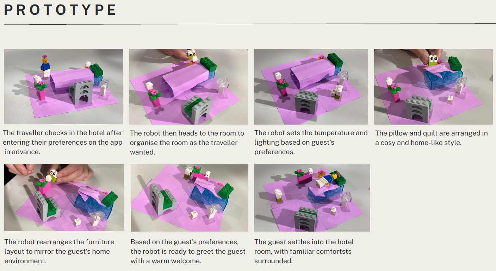

Hello there,
UX Designer UX Researcher Melbourne
UX designer and researcher completing a Bachelor of Design (UX/UI) at the University of Melbourne. I work across research, prototyping, and visual design, with a particular eye for aesthetics and craft.
A selection of research, prototyping, and product design work — each with its own story. Click any project to read the full case study.

Individual reflections on teamwork, the role of AI in iterative prototyping, and what it means to work as a UX designer.
Read case study →An AI-powered tool to help students create stand-out CVs and portfolios. Thematic interview analysis, paper prototyping, and live user testing with five participants.
Read case study →A full UX redesign focused on warmth, product clarity, and a smoother online ordering flow.
Read case study →Heuristic and task-based evaluation of a federated social platform, synthesised into actionable recommendations.
Read case study →My first hand-coded site — a media composition piece exploring layout, type, and the constraints of CSS as a creative medium.
Read case study →An in-progress website for a university society. Currently in the wireframing and component-library phase.
Follow along →— What I work with —
Visual work across typography, editorial design, and print — exploring colour, form, and the quieter parts of design.